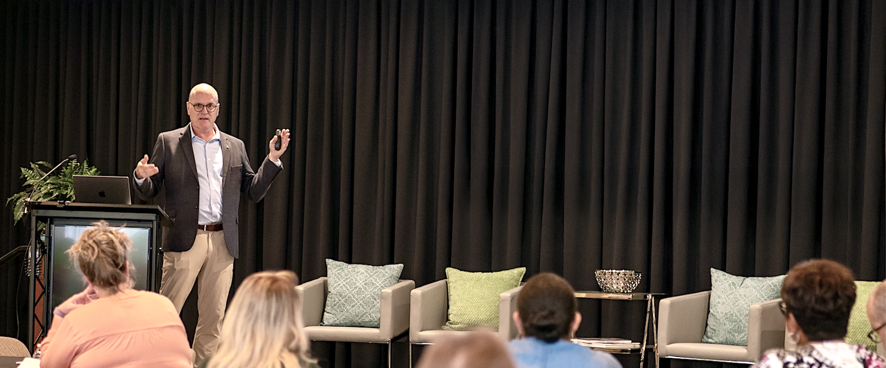

AI Workshops & Training
Hands-on sessions that help leaders and teams build confidence using AI tools in everyday work.

Workshops, speaking sessions, and team training that help leaders and teams understand AI and apply it to real work.
Book a SessionBuilt for real business use
With an operations-first perspective, each session focuses on how AI fits into actual work: saving time, improving workflows, reducing friction, and helping teams get more confident with the tools.
Hands-on sessions that help leaders and teams build confidence using AI tools in everyday work.
Keynotes, panels, and facilitated sessions for conferences, chambers, associations, boards, and leadership groups.
Tailored sessions for organizations that want AI training built around their team, tools, workflows, or industry.
Topics include:
Who this is for:
Frequently asked questions
Yes. Workshops and training sessions can be shaped around your audience, industry, tools, and goals.
Typical formats include 60-minute presentations, 90-minute leadership sessions, 2-hour demonstrations, half-day workshops and custom team training.
Sessions can include tools like ChatGPT, Gemini, Claude, and other everyday AI tools depending on the audience and goals.
No. Sessions are designed for business leaders and teams who want practical AI guidance without needing a technical background.